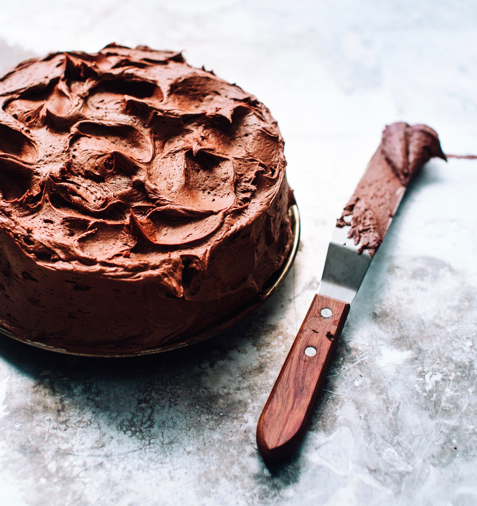
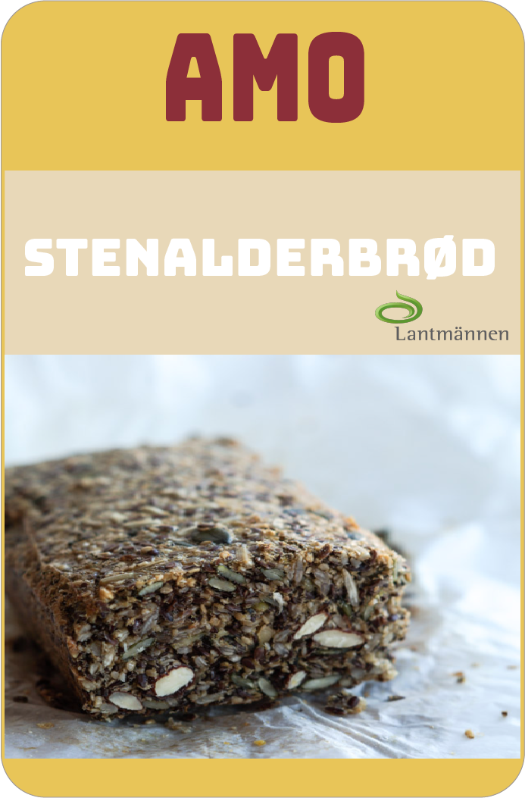
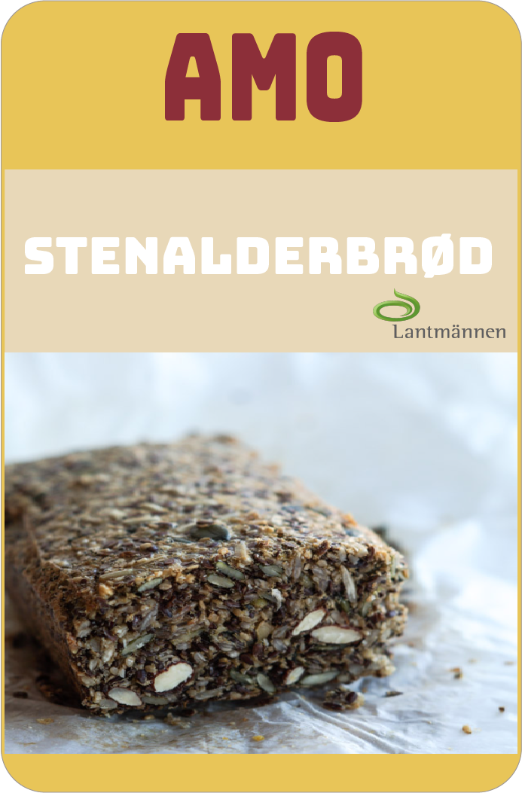

UGENS BEDSTE OPSKRIFT
Chokoladekage med chokolademouse

UGENS BEDSTE BAGETIP
Hænger kagen ofte fast i formen? Læg bagepapir
i bunden af formen, smør og bag som du plejer
og kagen løsner let. Alternativt kan du drysse
kageformen med sukker eller mel i bunden og
på kanterne
Brød- og bolleblandinger
Med Amos brød- og bolleblandinger er det nemt
at servere friskbagte boller og brød til fødselsdag,
morgenmad og brunch. Du skal blot tilsætte vand
og gær til melblandingerne. På alle emballager er
der forslag til, hvordan du nemt kan variere
brødene
Find vores brød- og bolleblaninger her
 
